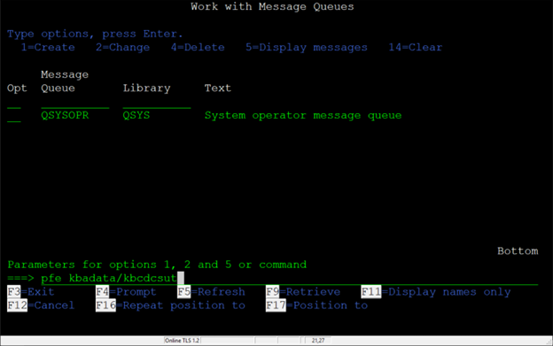

Welcome to the Customer Service Representative Portal
This section provides a step-by-step guide for adding new users in the Customer Service Representative department:
1) If new employee is a Customer Service Representative (CSR), there are TWO additional configurations.
First extra step. At the MAIN MENU, page down and choose option 17 (FlexEDI Menu).
2) Page down and choose option 14 (Cust Serv/Dispatch BACKUP).
3) Press F6 to Add Record. (User ID.)
4) Enter username if UserID field and press Enter key.
5) Change the “Should this User have Capability to See All Shipments:” to a Y.
Press F5 to Update.
6) Returns to Dispatcher Master UserIDs screen.
Press F3 to Exit.
7) Second extra step.
Go to a command prompt and type pfe kbadata/kbcdcsut and press Enter key.

8) Press the F10 key to highlight the Options along the top of the screen.
Click on MODE and press Enter key.
9) Click on ADD and press Enter key.
10) A blank screen appears.
11) Fill out the information as below and press Enter key.
12) Press F3 to Exit the screen.
Payroll Employee Only, Configuration of Trip Processing Menu.
Menu Path: 1, 54, 31.
Enter 54. Trip Processing Menu and press Enter key
13) Enter 31. User Assignments and press Enter key.
14) Enter new employee’s User ID and press Enter key.
15) Enter the information as shown below and press the F5 key to Update the record.